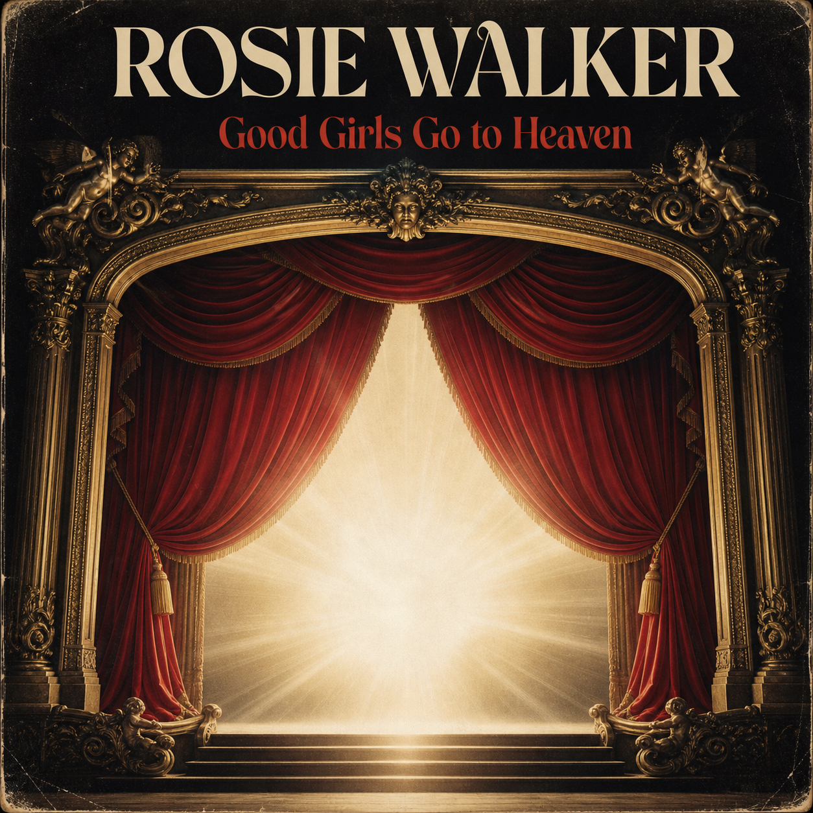
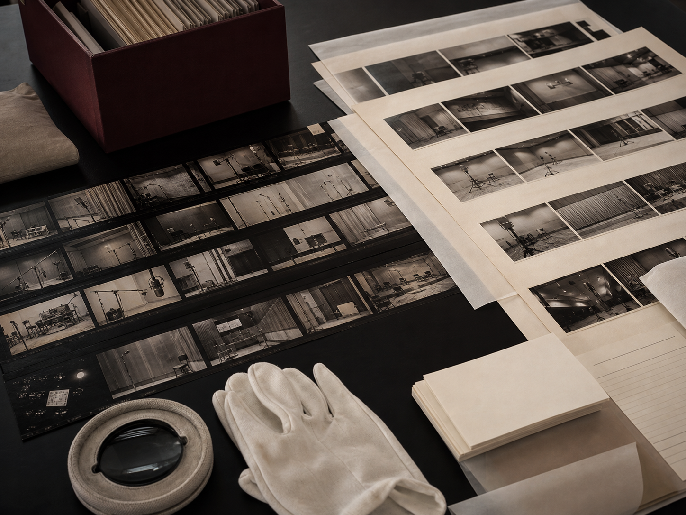

Track listing
13 works- 01Good Girls Go to Heaven (Bad Girls Go Everywhere)Single
- 02Transistor HeartSingle
- 03Sequin SermonAlbum track
- 04City of AngelsAlbum track
- 05Golden CageSingle
- 06The Paparazzi WaltzAlbum track
- 07Velvet RopeAlbum track
- 08Million Dollar TearsSingle
- 09Spotlight BlindnessSingle
- 10New York is a Lonely TownAlbum track
- 11Centerfold SoulAlbum track
- 12Symphony for the BrokenAlbum track
- 13Curtain CallAlbum track
Archive note / WW–RW–03
Symphonic rock · Wall of Sound
Rosie met engineer Homer Wilson during these Abbey Road sessions. His refusal to accept a compromised microphone position became part of the record’s origin story.
Original masters, session documentation and approved visual materials are held under logged, purpose-limited access. Full lyrics are not reproduced publicly.
Understand archive access →
Release record
1970 original issue
Atlantic RecordsOriginal release
Walker RecordsControlled master
WilsonWalkerCurrent rights administration